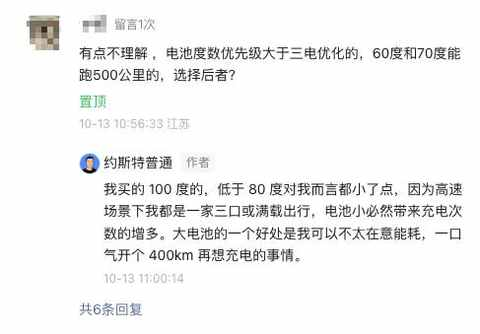
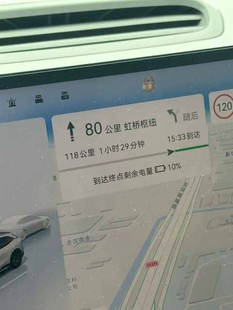
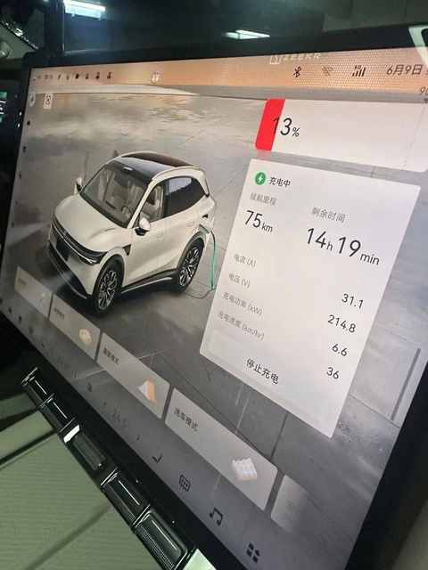
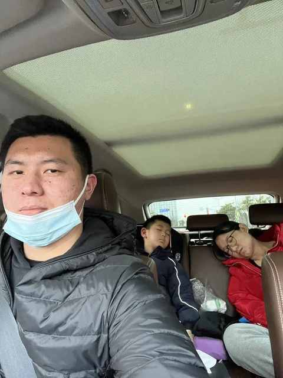
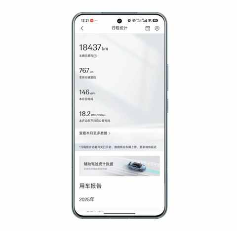

我的电车购买逻辑：用100kWh大电池的“确定性”，替代三电优化的“不确定性”
一、引子
在 10 天前写了一篇文章，是关于开了 7 年混动之后为什么选择纯电。
开了7年混动后，我为何最终投向纯电？一位车主的心路历程

最近的留言挺多，其中有一条是关于我为什么选择大电池版本的车，而没有选择三电优化做得很好的一些车型。

收到留言的当天，也在公众号后台做了回复，不过似乎 不止一位网友表示不理解我的这个决策。
所以，鉴于留言区能写的篇幅有限，还是需要用一篇文章来完整的表述下我的决策逻辑和选择的理由，希望能给到大家一些参考。
这个问题确实也很值得大家多多探讨多多理性的讨论，如果表述中也不对的地方还请大家指正。
二、大电池带来的确定性
1️⃣ 能做到 500km 不充电
我的场景和大部分人类似：
城区通勤为主，高速出行为辅。
鉴于使用场景，我有一个核心诉求：
希望能在偏极限的场景下，高速上能一脚电门稳定地开到接近 500km，以便能选择充电条件更优的服务区去充电，从而减少等待时间。
开车在城区通勤时， 大电池和小电池差别很小，产生差异的环节主要是在高速出行的场景。
在今年6 月 9 日便遇到类似场景，一家三口从合肥返程上海全程 460km。

路上路过的两个服务区的都要排队充电，果断决定不排队直接开回家再充电。

最终到家开始充电的时候续航显示为 13%，续航里程75km。

再加上已经跑了 460km，可以推测我这款 100 度电池的纯电 SUV偏极限情况下的续航在 530km 左右，偶尔跑 500km 不充电估计是没问题的。
2️⃣ 舒适配置想用就用
车是一个能把我们从 A 点移动到 B 点的交通工具，但现在随着新能源车的逐步增多，车也是一个移动的空间，车多了很多空间的属性。
与我而言，最难受的不是自己开车累，腰酸背痛之类的情况。而是我在前面开车，老婆孩子在后面睡着了但是睡的很不舒服，随便颠簸下或者等红绿灯的时候他们都会不由自主的调整姿势。

前后排座椅的通风、加热和按摩，后排座椅的软硬度与可调角度等等。
这些配置的开启必然会带来能耗的提升，那大电池就更有必要了，大电池能让我无需担心续航而不使用某些功能。
3️⃣ 不被能耗困住
之前油车为主流的时候，会看到很多晒油耗的帖子，当电车开始普及之后同样的晒电耗的内容也变多了。
但能耗的变量是挺多的：驾驶习惯、平均速度、出行人数、风阻系数……
能耗只是用车的一个方面，能耗高低也并不代表用车体验的优劣。

我的用车习惯是，不管能耗多少，怎么舒服怎么开更不会在道路通畅的时候不跑到限速的最高值，大电池能让我最大程度上不被能耗困住回归用车体验本身。
三、结语
我也并不是不喜欢三电优化好的车，而是我更倾向于大电池所能给到带来的确定性，让我用车的时候灵活性高一些、舒适度更高、顾虑的更少。
我也并不想说服任何人，毕竟我们每个人都是用真金白银的做出了自己的选择，同时也为这个选择负责。
最后，祝大家用车愉快、心想事成、一路顺风！
近期文章
从前，有一个笨小孩，他的武器叫“笨功夫”
中年人提高跑量的意外之喜：最大摄氧量首次突破62！
告别选择困难症！翻遍留言区整理的宝藏跑步装备清单！
一双 “问题” 跑鞋带来的顿悟：问题的答案藏在细节里……
没想到送老婆去面试，居然是一次 “班味” 之旅
开了7年混动后投向纯电9个月，一个中年新能源车主的生活有了哪些新变化？
车型太多，普通人怎么选新能源车？分享一个更符合普通人的选车方法！
弯路没少走！8年新能源车主的真心话：这10件车载好物，日常用车真的离不开！
国庆假期第一天，三个沪漂中年男人的饭局